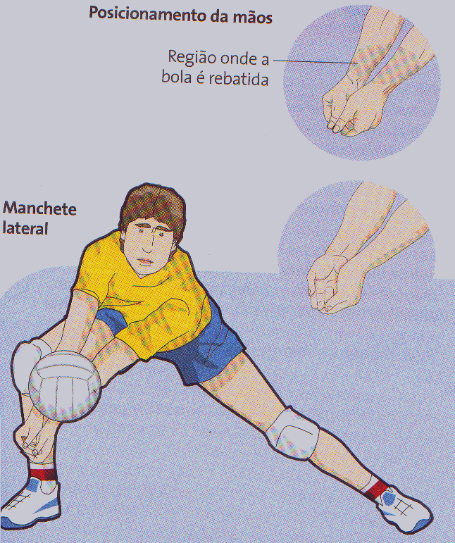
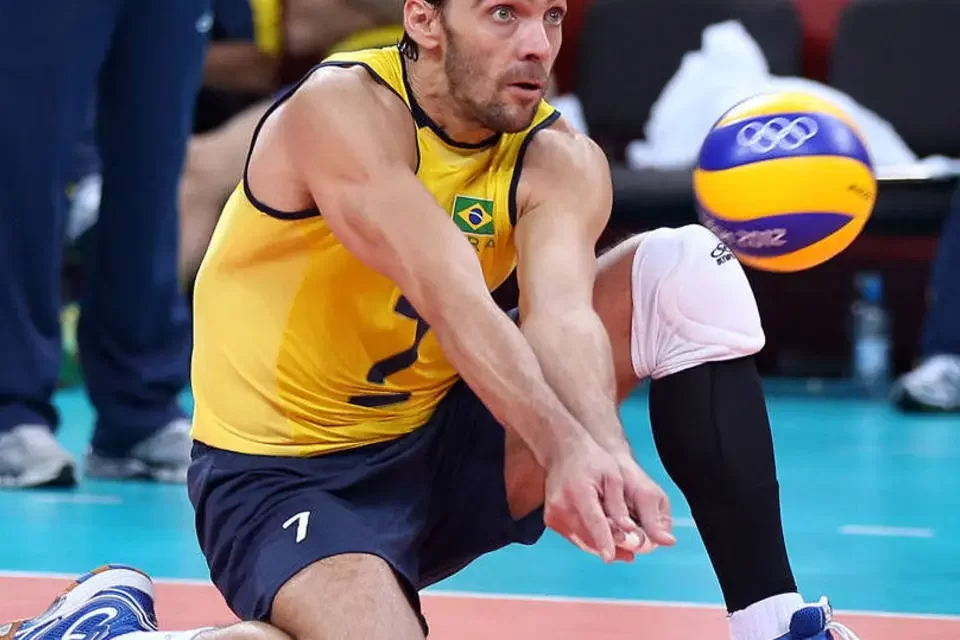

A recepção tem como objetivo fazer com que a bola perca força e velocidade, facilitando, assim, o levantamento. A ação de receber a bola é realizada pelo jogador que ocupa a posição 6 ou pelo líbero da equipe, após o ataque adversário. A recepção é o primeiro contato de uma equipe com a bola. Para realizar uma recepção, o jogador utiliza manchete ou toque. Os jogadores tendem a escolher a técnica de recepção de acordo com o tipo de saque ou ataque utilizado pelo adversário.
 Voltar à Página Inicial e ver outros Fundamentos